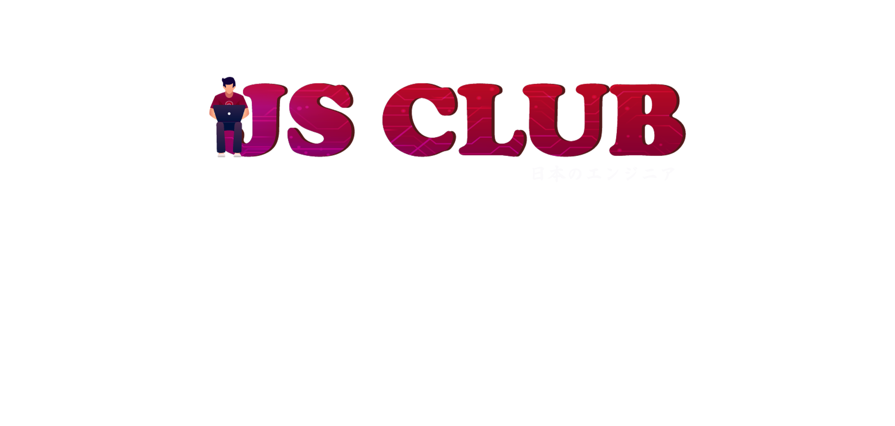
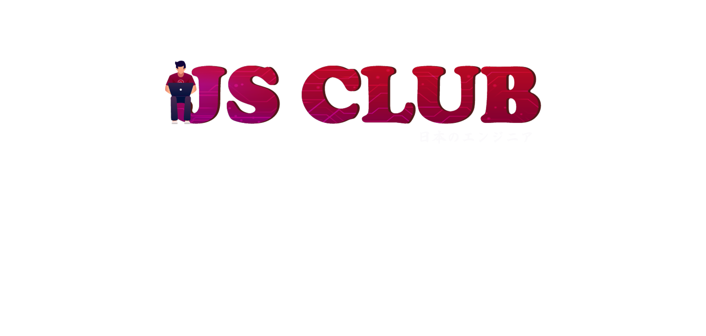

History
Từ khi thành lập vào năm 2014 đến nay, CLB đã đi qua 9 nhiệm kì - mỗi nhiệm kì là một bước trưởng thành và phát triển. Các đời chủ nhiệm của JS đều là những con người đấy trách nhiệm và nhiệt huyết. Cùng với các thành viên khác trong ban chủ nhiệm, họ sẵn sàng cống hiến thời gian và tài năng của mình để chèo lái CLB, góp phần không nhỏ vào những chiến tích lớn, nổi bật nhất phải kể đến danh hiệu CLB xuất sắc 10 kì liên tiếp.